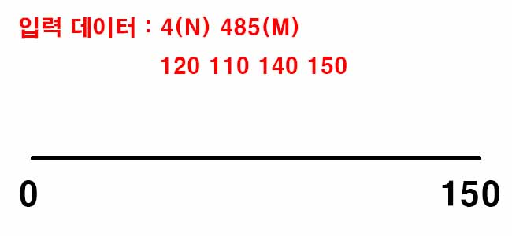
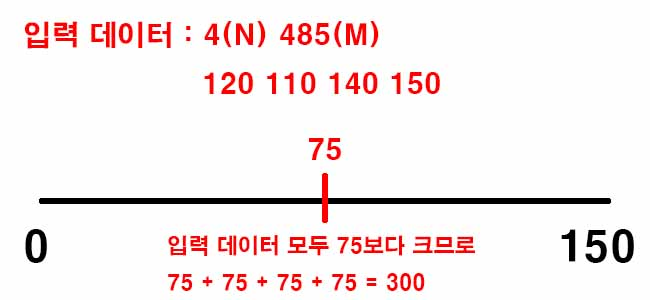
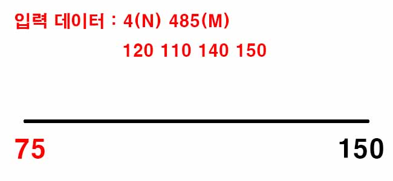

백준 2512. 예산
- https://www.acmicpc.net/problem/2512
-
문제 :
국가의 역할 중 하나는 여러 지방의 예산요청을 심사하여 국가의 예산을 분배하는 것이다. 국가예산의 총액은 미리 정해져 있어서 모든 예산요청을 배정해 주기는 어려울 수도 있다. 그래서 정해진 총액 이하에서 가능한 한 최대의 총 예산을 다음과 같은 방법으로 배정한다.
1. 모든 요청이 배정될 수 있는 경우에는 요청한 금액을 그대로 배정한다.
2. 모든 요청이 배정될 수 없는 경우에는 특정한 정수 상한액을 계산하여 그 이상인 예산요청에는 모두 상한액을 배정한다. 상한액 이하의 예산요청에 대해서는 요청한 금액을 그대로 배정한다.
예를 들어, 전체 국가예산이 485이고 4개 지방의 예산요청이 각각 120, 110, 140, 150이라고 하자. 이 경우, 상한액을 127로 잡으면, 위의 요청들에 대해서 각각 120, 110, 127, 127을 배정하고 그 합이 484로 가능한 최대가 된다.
여러 지방의 예산요청과 국가예산의 총액이 주어졌을 때, 위의 조건을 모두 만족하도록 예산을 배정하는 프로그램을 작성하시오. -
입력 :
첫째 줄에는 지방의 수를 의미하는 정수 N이 주어진다. N은 3 이상 10,000 이하이다. 다음 줄에는 각 지방의 예산요청을 표현하는 N개의 정수가 빈칸을 사이에 두고 주어진다. 이 값들은 모두 1 이상 100,000 이하이다. 그 다음 줄에는 총 예산을 나타내는 정수 M이 주어진다. M은 N 이상 1,000,000,000 이하이다. -
출력 :
첫째 줄에는 배정된 예산들 중 최댓값인 정수를 출력한다. -
풀이 :
예산의 최솟값과 최댓값을 설정하고 문제에서 원하는 답은 그 사이에 있으므로 임의의 값을 설정하고 비교하면서 범위를 좁힌다.

최솟값은 0으로 최댓값은 입력받은 데이터 중 가장 큰 값으로 한다.

최솟값과 최댓값의 중간값을 임의의 값으로 설정하고 입력받은 데이터와 비교한다.

비교해서 나온 값이 국가예산(M)보다 작으면 최솟값을 중간값으로 변경, 크면 최댓값을 중간값으로 변경한다.
이러한 과정을 최솟값과 최댓값의 차이가 1이 될 때까지 반복한다.
이렇게 나온 최솟값과 최댓값 중 하나가 답이므로 둘 중 누가 답인지 확인하는 과정이 필요하다. 최댓값을 예산의 상한액으로 설정했을 때 나온 예산의 값이 국가예산(M)보다 작거나 같으면 최댓값을 출력하고 아니면 최솟값을 출력한다.